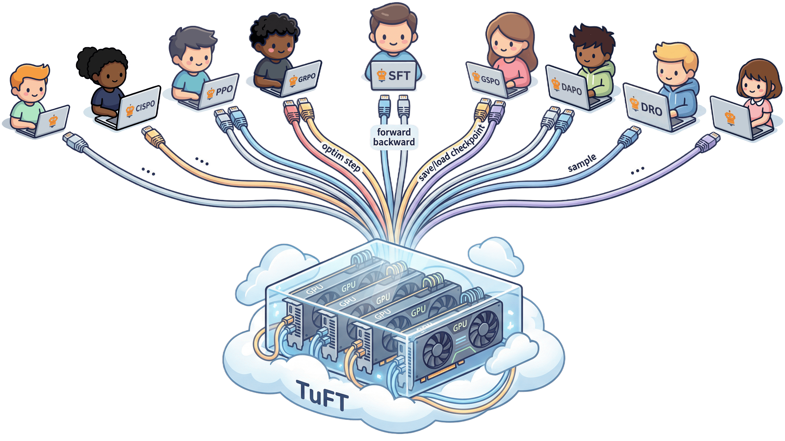
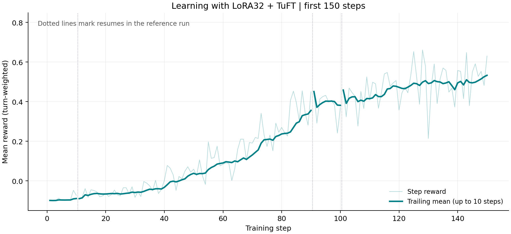

一份基础模型，多个轻量任务版本。 本章用图解释 LoRA 的用途和原理，再邀请你用 LoRA32 + TuFT 训练一个 ALFWorld adapter，对照参考曲线观察它学到了什么。
6.0 怎么用这一章
推荐先动手做 §6.1 的 LoRA32 实践：看图理解为什么用 LoRA、它如何工作，再启动训练，对照参考结果观察自己的学习曲线。
后续按需探索：§6.2–6.6 是开放实验，提供问题与配置思路，不提供参考结果；表中的 baseline 数据来自前五章。§6.7 是已有数据的分析工具，无需重训。
6.1 推荐实践：用 LoRA32 训练 ALFWorld
为什么用 LoRA：一个底座，多个任务版本
假设你要为客服、代码和 ALFWorld 各训练一个模型。全参数微调会得到三份完整权重；LoRA 则保留同一份基础模型，每个任务只学习一份小型 adapter（适配器）。新增任务时，需要保存、分发和加载的任务参数就少得多。
| 什么时候值得尝试？ | 你得到什么？ |
|---|---|
| 为同一个基础模型维护多个任务版本 | 每个任务单独保存、分发 adapter |
| 在同一组后端上训练或服务多个任务 | 共享基础权重，各任务保留自己的 adapter |
| 希望减轻微调时的训练状态负担 | 只为少量参数维护梯度和优化器状态 |
推理框架如 vLLM 可以按请求选择不同 adapter；TuFT 则让多个客户端共享训练与采样后端。本节先训练一个 ALFWorld adapter，学会这套方法后，再扩展到自己的任务。 共享要求基础模型兼容，实际并发容量取决于后端配置与显存。
看看 TuFT 如何共享训练与采样后端

冻结的基础权重
GPU 计算资源与服务
LoRA adapter
优化器状态与 checkpoint
同一基础模型上的任务可以共用基础权重，分别训练自己的 adapter。
同一基础模型上的任务共享冻结权重，各自维护 adapter、优化器状态和 checkpoint。不同基础模型可以由同一平台管理，但不能共用同一份基础权重。
原理图解：原权重不动，只学一条小分支
把模型里的一层线性变换想成 y = Wx：输入 x 经过权重 W 得到输出 y。全参数训练直接更新 W；LoRA 保留它，另加一条由两个小矩阵 A、B 组成的分支。
训练目标没有换，换的是可以更新哪些参数。 本例仍用多步 GRPO，优化器只更新 A、B；基础模型仍参与计算。Trinity 组织任务采样和 RL 流程，TuFT 提供训练与采样服务。
rank 是这条小分支中间的宽度。 A 先把输入映射到 r 维，B 再映射回输出维度。用 B × A 表示权重增量时，只需学习两块较小矩阵中的参数。
本层可训练参数为原来的 1.56%。
本例对 Qwen3-1.7B 使用 rank 32，总计训练约 3490 万个参数，约为基础模型的 2%。这是可训练参数比例，不是显存或耗时比例。
参数量怎么算？rank 变大意味着什么？
原矩阵有 输入维度 × 输出维度 个参数，LoRA 分支有 r × (输入维度 + 输出维度) 个参数。上图中的单层例子是 32 × (4096 + 4096) = 262144，约为原矩阵的 1.56%；全模型的约 2% 则来自多个层、七类投影的合计。
增大 rank 会增加可训练参数和表达能力，但不保证任务效果一定变好。冻结基础权重也不等于截断梯度：训练仍需经过基础模型计算。原理出处见 LoRA 论文。
三步运行：复用第一章的模型和数据
沿用第一章的 Linux x86_64、8×A100 80GB 服务器和模型、数据目录。 开始前释放本例需要的 GPU；首次准备服务器时，按 LoRA32 运行参考 检查依赖。
第一步：进入教程仓库。 已完成第一章，直接使用当前目录。
还没有本章代码？展开获取命令
git clone --branch tutorial --single-branch https://github.com/agentscope-ai/Trinity-RFT.git agentic-rl
cd agentic-rl
第二步：一条命令启动。 自动复用第一章根目录 .env 的模型和数据路径；未设置时使用 ./models/Qwen3-1.7B 和 ./alfworld_data，缺失时自动下载，无需重新填写路径。
bash examples/alfworld_lora32/run.sh
脚本安装配套版本、准备数据并启动训练，默认 72 个 runner、150 步，每 10 步保存一次。只想先检查条件，可以在命令末尾加 --check。
第三步：对照曲线看结果。 启动时会打印日志目录，观察 critic/score/mean 的趋势。结束时日志应到达第 150 步，并有 global_step_150/ 存档；保留整个示例工作目录，方便续训。
在另一个终端查看默认训练日志
LORA32_RUN_DIR="$HOME/.cache/agentic-rl/alfworld-lora32/checkpoints/ALFWORLD/Step_Wise_Alfworld_TuFT_lora32_lr5e5_speed_reader72_001"
tail -f "$LORA32_RUN_DIR/log/trainer.log"
更多配置、固定版本和中断续跑方式见 LoRA32 运行参考。
对照结果：少量参数能学会任务吗？
可以观察到学习，但不必一直增加步数。 参考曲线在 120–150 步进入较高区间，141–150 步平均训练分数为 +0.5331；训练到 250 步后，末尾 10 步均值回落到 +0.4046。因此，本节先用 150 步观察学习过程，再评测保存的模型。

参考曲线来自 LoRA32 加速版实验，期间调整过采样并发并从存档继续；本节练习从零固定使用 72 个 runner，供你对照学习趋势，不要求逐点一致。
| 看什么 | 参考结果 | 你运行时怎样对照 |
|---|---|---|
| 学习过程 | 120–150 步进入较高区间 | 观察训练分数的趋势与波动，而非单步最高点 |
| 留出任务表现 | 第 250 步模型：211/280 = 75.36% | 用相同任务和评测设置比较保存的模型 |
75.36% 是第 250 步模型的评测结果，不是 150 步练习的预期成功率。 图中的训练分数按对话步加权，也不能直接换算成测试成功率。
查看参考实验的完整配置与评测口径
| 项目 | 参考实验 |
|---|---|
| 模型 / 环境 | Qwen3-1.7B / ALFWorld |
| 微调方式 | LoRA rank 32，基础模型冻结 |
| 目标模块 | q_proj、k_proj、v_proj、o_proj、gate_proj、up_proj、down_proj |
| 学习率 / KL 系数 | 5e-5 / 0.001 |
| 组内采样 / 轨迹上限 | 每题 16 条轨迹 / 每条最多 30 个环境步 |
| 参考实验 | 共训练 250 步；本节先看前 150 步 |
| 硬件 | 8×A100，4 卡采样、4 卡训练 |
这里的学习率是全参数基线的 10 倍，是本次实际采用的条件；不能由“LoRA 参数少”直接推出应该使用这个学习率。微调方式、后端、采样节奏等条件同时改变，因此本例不是只改变 LoRA 一项的严格对照。
评测使用 140 个留出任务，每题运行两次，温度 1.0，每次最多 30 个环境步、每次生成最多 512 tokens。250 步训练的分数全期均值为 +0.2996；它来自训练采样，与独立评测回答不同的问题。
与全参数曲线对照，以及训练时间预算（Estimated）
左侧是两次历史实验的实测训练曲线；右侧是历史加速版在 72 个 runner 下的耗时外推（150 步约 35 小时）。当前上游配置的微批处理方式已变化，这个估算不能直接作为新版运行预算。 请先短程运行，再按自己的日志估算总耗时；安装、下载和启动时间另计。

| 比较项 | 前五章全参数基线（verl） | LoRA32 参考实验（历史 TuFT 加速版） |
|---|---|---|
| 可训练参数 | 约 17 亿 | 约 3490 万，约为前者的 2% |
| 梯度和优化器状态 | 为全部可训练参数维护 | 只为 adapter 参数维护，所需状态更少 |
| 任务模型的保存与部署 | 每个任务保存对应的完整模型权重 | 可单独保存 adapter，多个任务共享基础模型 |
| 运行硬件 | 8×A100 80GB；4 卡采样、4 卡训练 | 相同卡数与分工 |
| 训练曲线 | 133 步；后期回落，事后选用 step-100 | 141–150 步达到最高 10 步均值，随后未持续改善 |
| 留出任务成功率 | 未提供同协议评测 | step-250：211/280，75.36% |
图中的分数定义相同，都是 training batch 的平均 reward，按 turn / experience 加权，不是每局等权成功率（见第 3 章 §3.3）。全参数在这条历史轨迹上更快提升；两次运行还改变了后端、学习率、采样并发和异步数据流，不能单凭这张图把差异全部归因于 LoRA。
| 目标训练步数 | 历史加速版外推时间（Estimated） |
|---|---|
| 100 步 | 约 23.5 小时 |
| 130 步 | 约 30.6 小时 |
| 150 步（本章默认） | 约 35.3 小时 |
估算取参考实验第 103–150 步的完整 48 步记录：72 个 runner 已开始持续供给训练数据，平均每步约 14.1 分钟，再乘目标步数。这一窗口没有中途停训间隔，包含窗口内较慢的步骤和正常保存开销；起始恢复与填充阶段未用于估算。输入长度、生成轨迹和硬件负载会影响实际耗时，运行一段时间后应按自己的日志更新预算。
为什么参数少了，耗时却不按比例减少？ LoRA 减少的是需要更新的参数，采样和训练处理的数据并没有同步减少：基础模型仍要处理全部 token，RL 还要与环境交互、计算参考模型概率并等待数据。增加 runner 主要缓解采样等待，不能同比缩短这些计算。因此，这里的时间用于安排本次练习，不是 LoRA 与全参数在同等效果下的成本排名。
本例没有峰值显存或费用的实测对照。可以明确量化的是可训练参数减少约 98%；更小的梯度、优化器状态和 adapter 带来资源优势，不能将这个比例直接写成整机显存或费用的降幅。
图表数据与估算依据随教程提供，便于重新绘图和比较自己的结果。
6.2 开放实验 A：早停与 checkpoint 选择
开展开放实验时，保留全参数 baseline 的配置和曲线，每次只改变一个因素及其必要的派生设置。先短跑检查，再决定是否完整训练。
探索问题与假设
第 5 章 §5.5 记录了 baseline 在 step 115 达峰 0.936，随后失稳并在 133 步手动停止。我们据此提出假设：监控训练信号、提前停止，可能避免末段退化。前文事后选用
global_step_100，但这不等于已经验证了一套能提前预测峰值的早停规则。
改什么
可以比较以下三种做法。前文 baseline 使用了第 3 种方式；你可以设计实验，比较另外两种方式的效果与成本：
# 做法 1：为新实验设置明确的训练步数上限
trainer:
total_steps: 100 # 示例上限；不是已经验证的最佳停止点
# 做法 2（推荐用于新实验）：跑全长，但监控 entropy/resp_len/ppo_kl 手动/自动刹车
# 不改 yaml，跑的时候盯 trainer.log：
# grep -oE "'actor/entropy_loss': [0-9.]+" <ckpt>/log/trainer.log | tail
# 若这些信号持续异常，停止训练客户端，保留存档与服务后再评测
# 告警阈值需要根据自己的曲线确定，不能照搬一个通用数值
# 做法 3（本实验实际采用）：跑完/跑崩了也没关系，事后挑峰值 checkpoint
trainer:
save_interval: 10 # 50 → 10，多存几个 checkpoint 以便挑峰值
# 然后直接取崩溃前最佳平台期的 checkpoint：global_step_100
观察与记录
| 策略 | 应记录什么 | 结果记录 |
|---|---|---|
| baseline（133 步） | 末段退化与各存档的表现 | 已有观察，见第 5 章 |
| 按预设信号早停 | 触发时间、节省的训练时间、留出任务成功率 | 记录实测值 |
| 更密集保存并选择存档 | 同一评测条件下各存档的表现、额外存储成本 | 记录实测值 |
延伸思考
这条曲线提醒我们：更多训练不保证更好的模型。RL 的采样数据会随策略变化，退化可能来得很快；监控训练信号、保存中间版本，再用固定任务评测，有助于及时发现问题。entropy 或 KL 的异常是排查线索，单靠这次曲线还不能证明退化由哪个因素造成。
6.3 开放实验 B：减小 G（repeat_times 16 → 8）
探索问题与假设
沿用第 3 章 §3.4 的简化估算：假设每条轨迹独立、成功概率均为 10%，G=16 时全失败概率约 18.5%，G=8 时约 43%。真实采样未必独立，因此这些是帮助理解组内信号的估算。减小 G 是否降低学习效率、能否节省时间，需要实测。
改什么
algorithm:
repeat_times: 8 # 16 → 8
buffer:
train_batch_size: 3840 # 本建议按 G 的比例减半；也可以另做保持批大小不变的对照
16 × G × 30 是 16 题、每题 G 条轨迹都走满 30 步时的经验数上限，不是必须满足的等式。轨迹可能提前结束，队列也可以累计多批采样。本例同时减小训练批大小；若想单独研究 G 的影响，可以保持训练批大小不变，但要记录实际采样量和等待时间。
观察与记录
| 指标 | G=8 | G=16（baseline） |
|---|---|---|
| 每 step wall time | 记录实际耗时；数据量减少不保证耗时同比例下降 | 全期平均约 6.8 min |
| 全失败组概率（上述独立性假设下） | 约 43% | 约 18.5% |
| 到达 reward 0.8 所需 step | 记录步数，或注明未达到 | ~step 80 |
| 峰值 reward | 记录峰值与波动 | 0.936 |
| 12 小时的训练预算 | 记录实测值 | 按历史平均耗时估算约 106 步 |
延伸思考
G 是稀疏 reward 任务最重要的旋钮：太小 → 组内无差异、advantage 退化为 0；太大 → wall time 不划算。在成功概率 10% 且独立采样的估算下，G=16 让约 81.5% 的组至少出现一次成功；实际组内差异还取决于任务难度与采样相关性。反过来想 G=32：全失败组降到 0.9³²=3.4%，信号更足但每 step 数据量翻倍——适合攻最难的 look_at_obj_in_light（base 仅 2.6%，G=16 时大量全失败组）。
6.4 开放实验 C：换算法 multi_step_grpo → GiGPO
探索问题与假设
第 4 章 §4.3 进阶注脚：GiGPO 给每一步更细的「功劳分配」，理论上能修正「成功轨迹里废动作也被推高」的噪声。但 ALFWorld 状态空间大、哈希精确匹配，锚点命中率可能不高 → A_S 大量退化为 0 → 效果接近纯 GRPO。这是个开放的实证问题。
改什么
同一个 workflow，只改 algorithm 段（直接用现成的 examples/gigpo_alfworld/gigpo.yaml，或复制 baseline 改）：
algorithm:
algorithm_type: gigpo # multi_step_grpo → gigpo
advantage_fn: gigpo
advantage_fn_args:
omega: 1.0 # step-level 权重；试 omega=0 退化成纯 episode-level
gamma: 1.0
fnorm: none
注意
gigpo.yaml的个别默认值与 baseline 不同（如max_response_tokens、监控后端）。对比前先把它们对齐 baseline，否则不是单变量对比。
观察与记录
| 指标 | multi_step_grpo（baseline） | gigpo |
|---|---|---|
| 峰值 reward | 0.936 | 记录实测值 |
gigpo/anchor_group_hit_ratio |
— | 记录锚点匹配频率；结合 advantage 和学习曲线判断是否有用，没有通用阈值 |
gigpo/mean_abs_A_S vs A_E |
— | A_S ≪ A_E → step credit 贡献小 |
| 收敛速度 | ~step 80 到 0.8 | 记录实测值 |
延伸思考
这个 ablation 的价值不在「谁赢」，而在理解 step-level credit assignment 在稀疏 reward 大状态空间下的局限。如果 anchor_group_hit_ratio 很低，说明「精确状态哈希匹配」在 ALFWorld 太严格——改进方向是用更粗的状态表示（比如「当前房间 + 手持物」而非完整 observation 哈希）来提高锚点命中。这是真实的 research 问题。
6.5 开放实验 D：改 max_env_steps（30 → 20 / 50）
探索问题与假设
第 2 章观察到成功轨迹通常较短，部分失败轨迹会耗尽 30 步。把上限降到 20，可能减少长尾采样，也可能截断原本能成功的轨迹。升到 50 则提供更多尝试机会。对训练效果、吞吐和显存的实际影响，需要分别测量。
改什么
buffer:
explorer_input:
taskset:
workflow_args:
max_env_steps: 20 # 30 → 20
train_batch_size: 5120 # 本建议按轨迹上限的比例缩小；不是必须满足的等式
观察与记录
| 指标 | max_steps=20 | 30（baseline） | 50 |
|---|---|---|---|
| 每 step experience 数 | 记录实际采样与训练批大小 | 保留 baseline 日志作参考 | 记录实际采样与训练批大小 |
| 每 step wall time | 记录实际耗时 | 全期平均约 6.8 min | 记录实际耗时 |
| 序列长度与截断次数 | 记录实测值 | 保留 baseline 日志作参考 | 记录实测值 |
| 难任务（look_at_obj）表现 | 用相同任务评测 | 保留 baseline 作为对照 | 用相同任务评测 |
| 峰值显存 | 记录实测值 | 记录实测值 | 记录实测值 |
延伸思考
max_env_steps 决定 agent 最多有多少次尝试机会。降到 20 是一个潜在的提速方向，但不能提前认定被截掉的轨迹都会失败，也不能把上限减少三分之一直接换算成耗时节省。应同时记录被截断的比例、任务表现和完成训练批次的时间。
6.6 开放实验 E：lr 与 kl_coef（检验退化原因）
探索问题与假设
第 5 章观察到末段训练分数回落。一个待检验的解释是：当前学习率与 KL 约束的组合，允许策略在后期偏离过多。分别增加 kl_coef 或降低 lr，可以检验它们是否改善稳定性；现有曲线还不足以确定因果关系。
改什么（两个独立实验，别同时改）
# E-1：加大 KL 约束
algorithm:
kl_loss_fn_args:
kl_coef: 0.01 # 0.001 → 0.01（10×）
# E-2：降 lr
algorithm:
optimizer:
lr: 1e-6 # 5e-6 → 1e-6
观察与记录
| 指标 | baseline | kl_coef=0.01 | lr=1e-6 |
|---|---|---|---|
| 峰值 reward | 0.936 @115 | 记录实测值 | 记录实测值 |
| 后期是否退化 | step 116 后回落 | 检查回落时间与幅度 | 检查回落时间与幅度 |
| step 121 reward | 0.439 | 记录实测值 | 记录实测值 |
| entropy @120 | 0.67 | 观察是否随约束增强而降低 | 观察变化幅度 |
| 达到指定分数的耗时 | 用历史曲线作参考 | 记录实际耗时 | 记录实际耗时 |
延伸思考
lr 控制每次参数更新的步长，kl_coef 控制偏离参考策略的代价；两者会共同影响学习速度和策略变化。先分别改变一个参数，并使用相同评测设置，才能判断稳定性是否改善、是否牺牲了学习效果。
6.7 分析工具：任务族成功率分解（不用重训）
这不是 ablation，是对已有 baseline 产物的分析——回答第 0 章 §0.2 的「难度阶梯」问题：训练后哪些任务族学会了、哪些没学会。
# 从预置真实样本看早/后期 6 个任务族的成功率
python scripts/rl_tutorial/ch6_task_family_breakdown.py --sample
# 或指向你自己的完整 buffer
python scripts/rl_tutorial/ch6_task_family_breakdown.py \
--buffer checkpoints/ALFWORLD/Step_Wise_Alfworld/buffer/alfworld_buffer.jsonl \
--taskset examples/grpo_alfworld/alfworld_data/train.jsonl
本实验真实结果（运行上面命令可复现）：
| 任务族 | 早期成功率 | 后期成功率 | 提升 | 解读 |
|---|---|---|---|---|
pick_and_place |
27.8% | 97.2% | +69 pp | 单目标，最先学会、几乎满分 |
pick_heat_then_place |
4.7% | 93.5% | +89 pp | 多子目标，提升最大 |
pick_clean_then_place |
3.6% | 92.3% | +89 pp | 多子目标 |
pick_two_obj |
5.8% | 90.6% | +85 pp | 要找两个物体 |
pick_cool_then_place |
1.5% | 86.3% | +85 pp | base 几乎不会，提升巨大 |
look_at_obj_in_light |
2.6% | 69.4% | +67 pp | 最难：要到灯下看，仍 30% 失败 |
| 整体 | 10.0% | 90.3% | +80 pp |
怎么读这张表：
- 难度阶梯被 RL「填平」了大部分：base 时最简单的族（27.8%）和最难的族（1.5%）差 18 倍；训练后差距缩小到 97% vs 69%。RL 把「几乎不会」的任务拉到「大部分会」。
look_at_obj_in_light是天花板：即使训练后仍 30% 失败。它需要「找到物体 → 找到台灯/desk lamp → 拿过去看」，比「放到 receptacle」多一层抽象（目标不是「放」而是「在灯下看」）。这是下一轮实验该重点攻的族（比如对它单独加大 G，见实验 B 延伸）。- 多子目标任务提升最大（heat/cool/clean +85~89pp）：说明 RL 主要教会了模型「子目标规划」——第 2 章 §2.3 那条「找 cup→冷却→放置」的成功轨迹就是典型。
延伸思考
任务族分解是 agentic-RL 最有价值的分析——整体 reward 0.9 会掩盖「某个族还在 69% 挣扎」。生产里你永远要按任务子类型拆解成功率，找到「拖后腿的族」针对性优化（加数据、加 G、改 reward）。这比盯着一条总曲线有用得多。
6.8 本章回顾与实践目标
完成 LoRA32 推荐实践后，可以结合参考结果分析自己的训练，并区分训练分数与测试成功率。开展开放实验时，可以用以下目标检查自己的理解：
- ✅ 能启动 LoRA32 示例，并区分可训练参数量、显存、耗时与费用；
- ✅ 能区分训练分数与留出任务成功率，知道如何评测不同 checkpoint；
- ✅ 能提出一次可检验的配置改动，记录采样量、训练时间和学习效果；
- ✅ 能观察训练退化的信号，同时区分现象、原因假设与验证结果；
- ✅ 能按任务族分析结果，寻找下一次实验要解决的问题。
6.9 教程到此结束 — 接下来去哪
- 更大模型：把
model_path换成 Qwen3-4B/7B，看天花板能推到多高（显存不够时框架有 offload 等手段，见第 5 章 §5.4 悬停提示）； - 更难环境：ALFWorld 之外，试
examples/grpo_webshop（网购）、examples/grpo_sciworld（科学实验，在 Trinity 主仓库）——同样的 step-wise workflow 模式； - GiGPO 深入：把实验 C 的
anchor_group_hit_ratio做出来，如果太低，试「粗粒度状态哈希」改进（§6.4 延伸）； - 评估全参数 baseline 的 checkpoint：把前文推荐的
global_step_100（崩溃前最佳平台）checkpoint 转成 HF 格式，在test.jsonl（140 个 valid_seen 任务）上做离线评测，对比训练曲线；
最后，欢迎在 Trinity-RFT issue 页面反馈（请注明 RL Tutorial），或向 tutorial 分支提交 PR——让具身 Agentic RL 从「少数有集群的团队能做的事」变成「每个有 GPU 的工程师都能上手的事」。